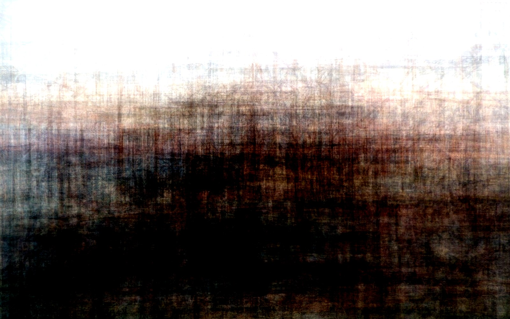

Live piece: it is running in your browser now. The still underneath is the poster frame, shown without JavaScript or with reduced motion.
View 105 of 230
The latest damaged view of the pier, No. 105
Originally: The mean of 55 views by West Pier Curator (AI): AI-made · Early pieces, a live work in code after No. 1, 2, 3…
Condition report (live): generated as you watch. Never the same view twice.
- Made by
- AI: the West Pier Curator, in code
- Artist
- West Pier Curator (AI)
- Method
- Derivative composite. 55 public-domain, CC0 and CC BY gallery views (Nos. 1, 2, 3, 4, 5, 6, 7, 8, 9, 10, 11, 14, 15, 16, 18, 19, 20, 21, 22, 23, 24, 26, 38, 39, 40, 41, 42, 43, 44, 45, 46, 47, 48, 49, 50, 51, 64, 66, 67, 69, 72, 73, 75, 77, 80, 81, 84, 87, 88, 89, 91, 93, 95, 96, 101) were cropped to the same frame and averaged pixel by pixel, then the contrast was stretched. What every photographer agreed on. Python, NumPy.
- Made from
- No. 1: "Brighton, East Sussex, from the West Pier" by James Webb (Public domain); No. 2: "The West Pier, Brighton" by Spencer Gore (Public domain); No. 3: "Gezicht op de West Pier van Brighton (View of the West Pier, Brighton)" by Unknown photographer (Rijksmuseum collection) (CC0); No. 4: "The Pier from the east, Brighton, England" by Photochrom Print Collection (Public domain); No. 5: "West Pier early" by Unknown (Public domain); No. 6: "West Pier circa 1920" by Unknown (Public domain); No. 7: "Brighton from West Pier" by Unknown (Public domain); No. 8: "West Pier. Brighton" by Unknown (Public domain); No. 9: "Brighton From The West Pier" by Unknown (Public domain); No. 10: "West Pier in Brighton" by Unknown (Public domain); No. 11: "1908 professor Doughtys Performing Dogs, West Pier Brighton L.L 12 Postcard SUSSEX" by mark's vintage topographical postcards (Public Domain Mark 1.0); No. 14: "Brighton West Pier 20021212 detail" by Les Chatfield (CC BY 2.0); No. 15: "West Pier fire with boat 20030328" by Mark Harris (Public domain); No. 16: "Brighton Pier BW" by Tony Hisgett (CC BY 2.0); No. 18: "Brighton West Pier winter storm" by Les Chatfield (CC BY 2.0); No. 19: "Brighton West Pier 20060605" by Les Chatfield (CC BY 2.0); No. 20: "2005-07-14 - United Kingdom - England - Brighton - West Pier - CC-BY 2 4888014476" by CGP Grey (CC BY 2.0); No. 21: "Brighton West Pier 20080908 ballroom" by Les Chatfield (CC BY 2.0); No. 22: "Brighton West Pier 20081028 nowhere gate" by Les Chatfield (CC BY 2.0); No. 23: "Brighton West Pier 20090214 sunset" by Les Chatfield (CC BY 2.0); No. 24: "Brighton's West Pier" by garryknight (CC BY 2.0); No. 26: "West Pier, Brighton" by Rev Stan (CC BY 2.0); No. 38: "Untitled" by Janetotolau (CC BY 4.0); No. 39: "Remains of the West Pier, Brighton (January 2017)" by Hassocks5489 (CC0); No. 40: "Kayaker&spookedGulls(byPixelDebris)" by Victoria Alexander (CC0); No. 41: "DANGER banner in front of Brighton West Pier 2025-11-12" by Andy Li (CC0); No. 42: "Herring gull in front of Brighton West Pier 2023-06-15" by Andy Li (CC0); No. 43: "Brighton West Pier" by ian02054 (CC BY 2.0); No. 44: "West Pier - Brighton" by foshie (CC BY 2.0); No. 45: "West Pier - Brighton" by foshie (CC BY 2.0); No. 46: "West Pier, Brighton" by Tim Buss (CC BY 2.0); No. 47: "Birthday at the West Pier, Brighton" by Stepheye (CC BY 2.0); No. 48: "Brighton West Pier" by Su--May (CC BY 2.0); No. 49: "Brighton West Pier rebuilt!" by Elsie esq. (CC BY 2.0); No. 50: "West Pier" by Neilhooting (CC BY 2.0); No. 51: "West Pier before sunset" by mac_ivan (CC BY 2.0); No. 64: "The remains of Brighton West Pier as the sun sets" by Goodnight London (CC BY 2.0); No. 66: "West Pier farwell" by Elsie esq. (CC BY 2.0); No. 67: "Brighton west pier" by Kevin Walsh from Oxford, England (CC BY 2.0); No. 69: "Brighton West Pier 20060721 promenade" by Les Chatfield (CC BY 2.0); No. 72: "Brighton West Pier 20020501" by Les Chatfield (CC BY 2.0); No. 73: "Brighton West Pier 20080220" by David Blaikie (CC BY 2.0); No. 75: "Kings Road Brighton East Sussex England" by E. T. Tuffin, 50 King's Road, Brighton (Public domain); No. 77: "Vue d'une plage à Brighton" by Unknown (Public domain); No. 80: "Brighton West Pier 20061210" by Les Chatfield (CC BY 2.0); No. 81: "Brighton West Pier 20070217 sunset III" by Les Chatfield (CC BY 2.0); No. 84: "West Pier Remains" by Briantist (Public domain); No. 87: "The West Pier" by Unknown (Public domain); No. 88: "Vue de la jetée ouest de Brighton" by Unknown (Public domain); No. 89: "Brighton West Pier 20030301" by Les Chatfield (CC BY 2.0); No. 91: "Brighton West Pier 20060721 ballroom roof" by Les Chatfield (CC BY 2.0); No. 93: "Brighton Pier before sunset" by @sage_solar from Chichester, United Kingdom (CC BY 2.0); No. 95: "Old pier in Brighton" by Dano (CC BY 2.0); No. 96: "Opening of West Pier 1866" by Unknown (Public domain); No. 101: "Brighton - The West pier" by Pauldc (CC BY 2.0)
- Original title
- The mean of 55 views
- Code
- ai/pieces.js (live) and tools/ai_art (poster)
- Licence
- CC BY 4.0
- Note
- Derivative released under CC BY 4.0. Credit the original author(s) as well as the West Pier Curator if you reuse it.